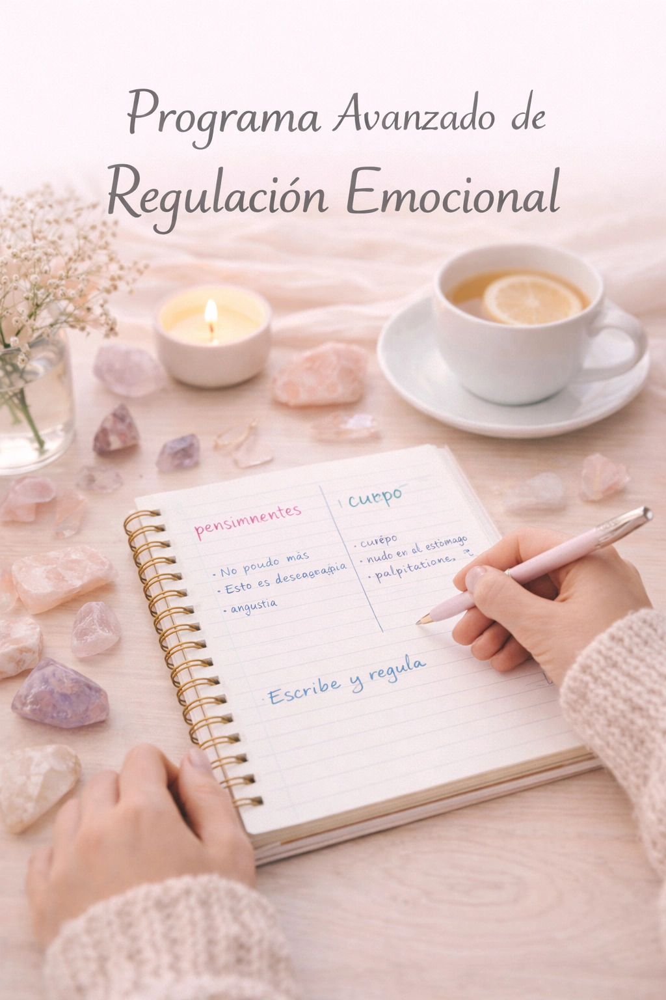
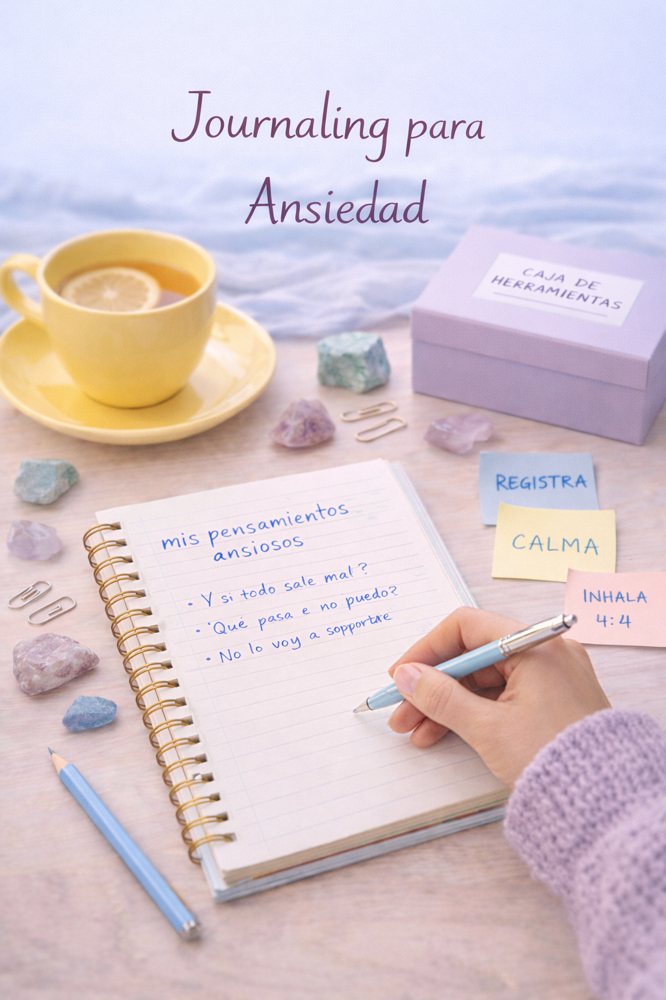

Nuestros cursos están diseñados para acompañarte en un proceso de conexión profunda contigo mismo. A través del journaling terapéutico guiado, te ofrecemos un espacio seguro para detenerte, observar tus emociones, ordenar tus pensamientos y desarrollar una relación más consciente y amable con tu mundo interno. Cada programa combina estructura, profundidad y práctica, permitiéndote avanzar a tu propio ritmo y aplicar lo aprendido en tu vida diaria.
Curso 1
Este curso ofrece una visión integral del journaling terapéutico como herramienta de acompañamiento emocional. A lo largo del programa, la persona aprende a crear un espacio seguro para la escritura, iniciarse en ejercicios de journaling consciente y desarrollar habilidades de identificación emocional. El curso aborda la diferenciación entre pensamientos, emociones y sensaciones corporales, e incorpora prácticas de autocompasión y autoapoyo. Finalmente, se entregan estrategias prácticas para integrar el journaling de forma sostenible en la vida diaria, respetando los propios ritmos y límites emocionales.
Objetivos del curso:

Curso 2
Este programa profundiza en el uso del journaling como herramienta de regulación emocional. Se trabajan técnicas de registro emocional profundo, escritura para la calma del sistema nervioso y reestructuración cognitiva escrita. A través de la escritura guiada, se promueve la observación de emociones intensas, la integración de partes internas y la resignificación de experiencias significativas. El curso culmina con la construcción de un plan personal de regulación emocional, orientado a sostener los aprendizajes y aplicarlos de manera autónoma en la vida cotidiana.
Los objetivos son los siguientes:
Curso 3
Este curso está diseñado para acompañar procesos de ansiedad a través de la escritura terapéutica. A lo largo del programa, se explora la comprensión de la ansiedad desde una perspectiva psicoeducativa, el registro de pensamientos ansiosos y la reducción de la rumiación. Se incorporan ejercicios de journaling orientados a la presencia, la reescritura de escenarios catastróficos y el desarrollo de autocompasión en momentos de activación ansiosa. El curso finaliza con la creación de una caja de herramientas escrita, práctica y personalizada para el manejo cotidiano de la ansiedad.
Los objetivos son los siguientes:

Agenda un cupo
Nuestra comunidad está creada para brindarte acompañamiento, motivación y continuidad. Participa en grupos privados, sesiones mensuales en vivo y retos guiados que te ayudarán a mantener una práctica constante y significativa.
Este formulario no está destinado a consultas clínicas o situaciones de crisis emocional. Si necesitas ayuda inmediata, busca apoyo profesional en tu región.
Fosfato 1050, La Florida, Santiago
info@example.com
+56 9 12345678
© Journaling Terapéutico. Todos los derechos reservados. Designed by HTML Codex